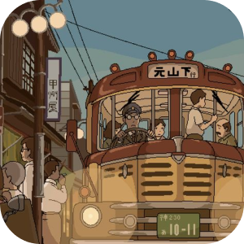
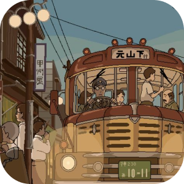

Hi, my name is
Betris Merilin Gunawan
I’m a business women and also love programming
 


About me
Hai everyone, my name is Betris Merilin Gunawan nice to meet you!! I have a small business and I love programming. I live in Pontianak, Indonesia. I was born in ketapang, 18 March 2003. I’am digital business Student from Widya Dharma University in Pontianak. Coding has been my passion and hobby since I was 19 years old, . Besides coding, I love listening to music. My favorite genres are K-RnB. I like watching film too. I love watching K-drama or Korean movie and anime (especially Demon Slayer and Ghibli Studio). I also have a small business engaged in fashion, especially bead accessories. You guys can check it out my business here. I'm open to Job opportunities and collaboration where I can contribute, learn and grow. If you have a good opportunity that matches my skills and experience then don't hesitate to contact me.
My Skills

Proramming skills
HTML
CSS
JS
SQL
Java
GitHub
Cloud
Digital Marketing